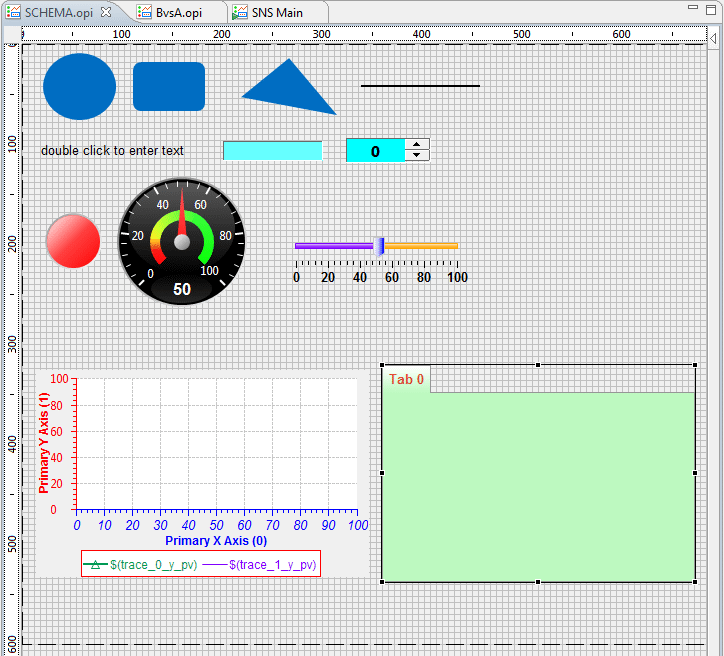

With Schema, users are able to change the default properties value when widgets are created in OPI editor.
The default properties value are saved in schema opi file which is a regular opi file.
The property values of the widget in schema OPI will be used as the default properties value
when the same type of widget is created. There should be only one widget for each type in schema opi.
It is not required to have widgets for all types. Whenever the schema OPI changed, user needs to reload the schema
by setting the Schema OPI preference to blank, applying it and setting it back to the schema OPI file.
Schema can help a site to achieve consistent looking OPIs if all the site using the same schema opi.
Following is a schema opi example. For example, the default looking of slider widget will be exactly same as the slider in the schema opi whenever a new slider is created.
